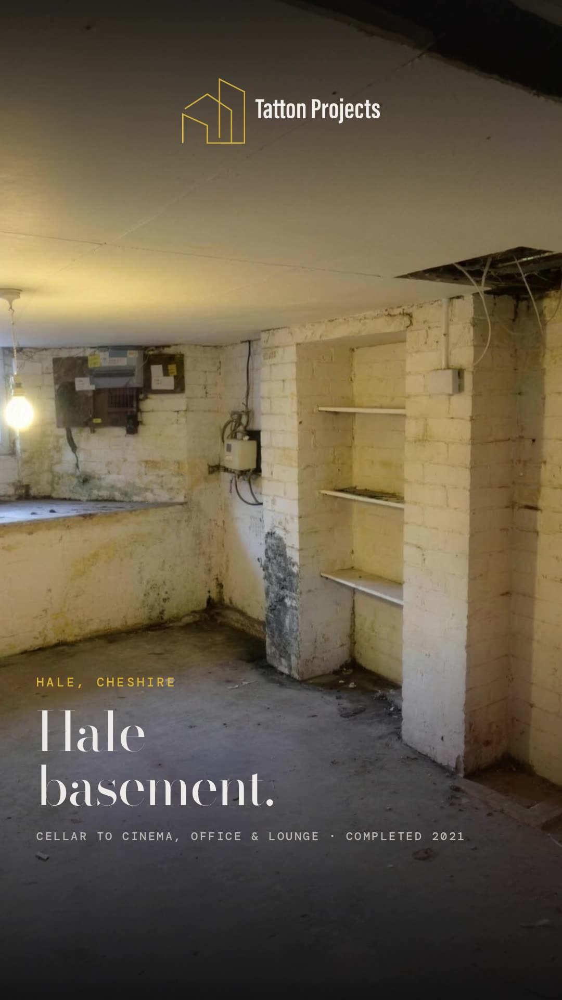

Refurbishment · Altrincham, Hale & Bowdon
Property refurbishment, Altrincham.
We refurbish properties across Altrincham, Hale and Bowdon: whole houses taken back to brick, period homes brought up to date without losing their character, and offices and commercial buildings refurbished around the people using them.

Refurbishment
Back to brick, then better.
A property refurbishment in Altrincham usually starts with a house that works on paper and not in practice: a Victorian villa off The Downs with forty-year-old wiring, an Edwardian semi in Hale with a cramped kitchen, or a 1930s detached in Timperley that's been extended twice and never joined up. We strip it out, fix what's wrong with the structure and services, then put it back together as one house.
On a £375,000 job in nearby Wilmslow we took a tired 1930s detached back to brick: full-width rear extension, re-render, every window replaced, new heating and electrics, an open-plan kitchen and living space, an oak staircase and an oak-framed porch. We refurbish offices and commercial buildings in Altrincham too, phased so the building stays open.
What we do
Refurbishments we take on.
Whole-house refurbishment
Strip-out, structural repairs, rewire, new heating and plumbing, insulation, glazing, plastering, kitchens, bathrooms and joinery, as one programme.
Period property renovation
Victorian and Edwardian houses in Bowdon, Hale and around The Downs: sash windows, cornicing, fireplaces and joinery kept or matched, services brought up to date.
Refurbishment with extension
The refurbishment and the extension built together, so the new kitchen, the structure and the services are designed once.
Commercial refurbishment
Offices, shops and commercial buildings in Altrincham refurbished floor by floor, out of hours where needed, with the building kept running.
Scope
What's included.
- Strip-out and structural repairs
- Rewiring and new heating
- Plumbing, bathrooms and kitchens
- Insulation, windows and glazing
- Plastering and joinery
- Period features kept or matched
- Flooring and decoration
- Commercial and office refurbishment
Recent work
Projects like this, delivered.

Wilmslow house
Wilmslow
A tired 1930s detached taken back to brick and rebuilt — full-width rear extension, complete refurbishment, new kitchen, staircase and oak porch.

Didsbury kitchen extension
Didsbury, Manchester
A kitchen extension under a full glazed roof — new kitchen fitted, flooring and tiling throughout, and crittall-style glazing onto the garden.

Office fit-out
Stockport
A £125K office fit-out. Frameless glass boardroom, wide-board oak flooring, recessed lighting and a double-height stair.

Hale basement conversion
Hale, Cheshire
Full below-ground basement conversion beneath an existing Hale property: structural underpinning, tanking and waterproofing, services and finished living space with a cinema room, home office and lounge.
Straight answers
Questions we get asked.
In 2026 a whole-house refurbishment typically costs £1,400–£2,800 per square metre, before VAT and fees, depending on how far back the house goes and the finish. A 200 sq m house refurbished to a high standard is roughly £300,000–£500,000.
Yes. Bowdon, The Downs and parts of Hale are conservation areas, and listed buildings need listed building consent from Trafford Council for most internal work. We work with your architect or heritage consultant and keep or match original features.
Yes: offices, shops and commercial buildings, including Cat A and Cat B office fit-out, usually with the building in use.
For a full back-to-brick refurbishment most clients move out; for a phased refurbishment you can often stay. We'll tell you honestly which yours is.
Send the address, photos and what you want from the property. We'll visit, then give you a written cost plan from the person who would run the job.
Also from Tatton
Other services.
Office fit-out
Cat A and Cat B fit-out, workplace refurbishment and commercial interiors — much of it delivered in buildings that never closed.
CommercialShopfitting
Shopfitting and retail refurbishment, from strip-out and enabling works to a finished store — built around a fixed opening date.
CommercialCommercial refurbishment
Whole-building and occupied refurbishment of workplaces and commercial property — including the EPC and MEES upgrades that make a building lettable.
ResidentialNew build homes
One-off private homes, from £400k to £3m and beyond — from groundworks and structure through services, finishes and handover.
ResidentialHousing developments & land
Schemes of two to thirty plots. We buy sites, joint-venture with landowners and build out — with a free site appraisal in five working days.
ResidentialExtensions in Altrincham
Substantial extensions, structural remodelling and whole-house refurbishment across Altrincham, Hale and Bowdon.
ResidentialExtensions in Hale
Major extensions and high-specification whole-house remodelling in Hale, Bowdon and the surrounding Cheshire villages.
CommercialCat A & Cat B fit-out
Landlord Cat A, tenant Cat B and complete shell-to-handover fit-out, delivered UK-wide.
CommercialCommercial fit-out
Office, healthcare, hospitality and retail fit-out, delivered UK-wide and around live operations.
CommercialConversions
Office-to-residential, commercial change of use and permitted-development conversions, delivered UK-wide.
CommercialHealthcare fit-out
Care homes, surgeries and clinical buildings, fitted out and refurbished in live settings, UK-wide.
CommercialHospitality fit-out
Hotels, restaurants and bars, front and back of house, delivered to a fixed opening date, UK-wide.
ResidentialBuilders · Altrincham
Owner-managed building contractor based in Altrincham: extensions, renovations, basements, new builds and office fit-out.
ResidentialRenovations · Altrincham
Whole-house renovation and remodelling across Altrincham, Hale and Bowdon, delivered as one programme.
ResidentialBasements · Altrincham
Basement conversions beneath existing houses across Altrincham, Hale and Bowdon.
CommercialOffice fit-out · Altrincham
Cat A and Cat B office fit-out and refurbishment for businesses in Altrincham and south Manchester.
ResidentialBuilders · Manchester
Owner-managed building contractor for Manchester: extensions, refurbishments, new builds and commercial fit-out.
ResidentialExtensions · Manchester
House extensions in Manchester: side returns, kitchen extensions, glazed roofs and two-storey extensions.
ResidentialHome builders · Altrincham
One-off new homes and replacement dwellings in Altrincham, Hale and Bowdon.
ResidentialHome builders · Manchester
One-off new homes, infill houses and small developments in Manchester and Trafford.
ResidentialRefurbishment · Manchester
Whole-house and commercial property refurbishment across Manchester.
CommercialIndustrial units
Steel portal-frame industrial units, workshops and self-storage, from slab and frame to cladding, roller shutters and external works.
ResidentialBuilders · Wilmslow
Extensions, whole-house renovations and new homes in Wilmslow and Alderley Edge, from our office on The Downs in Altrincham.
ResidentialBuilders · Knutsford
New build homes, extensions and renovations in Knutsford and Mobberley, from plot to keys.
ResidentialBuilders · Didsbury
Rear and kitchen extensions, staircases and refurbishments in Didsbury, handed over finished, kitchen and all.
CommercialOffice fit-out · Stockport
Cat A and Cat B office fit-out in Stockport, including a £175K service centre built around a building that never closed.
Check us out
Find Tatton Projects everywhere.
Five-star reviews
Read what clients say on our Google Business Profile, or leave a review of your own job.
GoogleLeave us a review
Had work done by us? Two minutes on Google helps the next family find a builder they can trust.
LinkedInTatton Projects on LinkedIn
Project updates, handovers and what we’re building across Manchester and Cheshire.
Instagram@tatton.projects
Before, during and after photos straight from site.
YouTubeSite walkthrough films
Walkthrough films of our jobs, from strip-out to handover.
TikTok@tattonprojects
Short clips straight from our sites.
AccreditationFederation of Master Builders
Vetted FMB member, Constructionline Gold and CITB registered, with CSCS-carded site staff.
Companies HouseTatton Projects of Cheshire Ltd
Company no. 17553626, part of the DPG Holdings MCR group.
Sister companyThe Load Bearing Company
Our structural team: steel beams, RSJs and load-bearing wall removal across the North West.
Our softwareEstiMate
The quoting and contracts app we built to price our own jobs, now used by UK builders.
Refurbishing in Altrincham?
Send the address and a few photos. You'll get a written cost plan from the person who'd run the job.